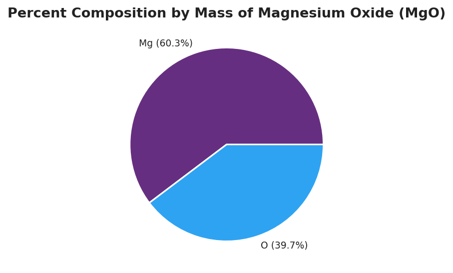
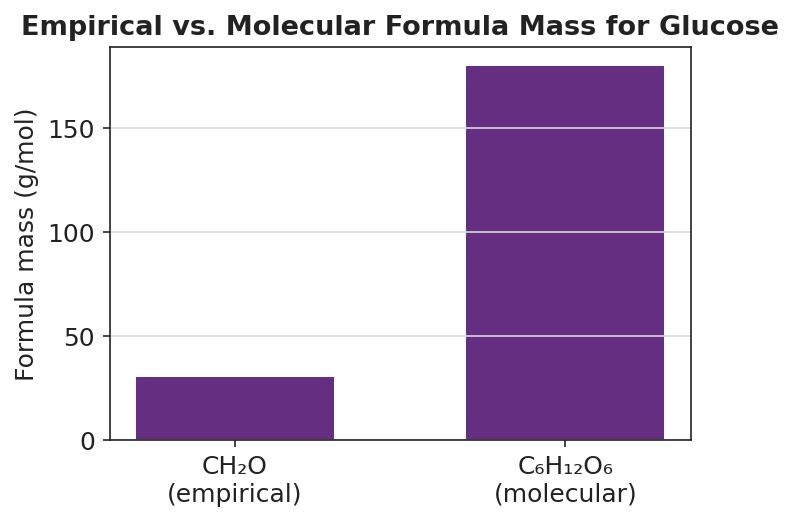

01 Phenomenon
A chemist is handed a sealed vial of unknown white solid — no label, no formula, nothing but the powder. There is no machine that prints the formula. So the chemist burns a weighed strip of magnesium ribbon in air and weighs the white powder that forms. The result: 0.243 g of magnesium combined with exactly 0.160 g of oxygen. From two numbers on a balance, the formula can be recovered.
02 Driving question
How can a chemist figure out an unknown compound's formula from nothing but lab data — masses and percentages?
03 Notice & wonder
| I notice… | I wonder… |
|---|---|
Turn & Talk #1: The white powder is about 60% magnesium by mass and 40% oxygen by mass. If we trusted the masses, we’d guess there are more magnesium atoms than oxygen atoms. But a magnesium atom (24.3 g/mol) weighs more than an oxygen atom (16.0 g/mol). In one sentence: how could 60% of the mass still mean an equal number of atoms?
04 Initial model
Before your teacher names the process: you have 0.243 g of magnesium and 0.160 g of oxygen stuck together in a powder. Using only your Periodic Table, try to find the ratio of magnesium atoms to oxygen atoms.
First guess — using just the masses, which element do you think has more atoms? _______________
From Lesson 05, how do you turn a mass into a count of atoms (moles)? What do you divide by? _______________________________________________
Convert each mass to moles:
| Element | Mass (g) | ÷ molar mass (g/mol) | = moles |
|---|---|---|---|
| Mg | 0.243 | ||
| O | 0.160 |
What is the ratio of Mg moles to O moles? _______________ So the simplest formula is: _______________
Did the mole ratio match your mass guess in part (a)? What surprised you? _______________________________________________
05 Investigate
Part 1 — The four-step routine (on your group’s vertical surface)
Your group will recover the magnesium-oxide formula on a whiteboard. As a class you will name the steps you all used, even before anyone called them by name. Record them here in order:
- Start with the ___________ (grams) of each element — from the balance.
- Divide each mass by the element’s ___________ to get ___________ of each element.
- Divide every mole value by the ___________ value to get a ratio.
- Round the ratio to whole numbers — these become the ___________ in the formula.
Part 2 — The percent-composition version
Look at figures/mgo_percent_composition.png:

Re-derive the formula starting from the percentages. Trick: assume you have exactly 100 g of powder, so each percent becomes a mass in grams.
| Element | Percent → mass (g) | ÷ molar mass (g/mol) | = moles | ÷ smallest = ratio |
|---|---|---|---|---|
| Mg | 60.3 | |||
| O | 39.7 |
Empirical formula from the percent data: _______________
Did you get the same formula as you did from the lab masses in your Initial Model? _______________
Why does the percent version and the mass version give the same formula, even though the amounts are different? _______________________________________________
Part 3 — Empirical vs. molecular formula
Look at figures/empirical_vs_molecular_mass.png:

The empirical formula of glucose is CH₂O (mass 30 g/mol). The real molecule weighs 180 g/mol. What whole number do you multiply by? 180 ÷ 30 = _______________
Multiply every subscript in CH₂O by that number. Molecular formula: _______________
For magnesium oxide (MgO), there is no separate molecule to scale up. Is MgO an empirical formula, a molecular formula, or both? _______________________________________________
06 Make it make sense
For each problem, find the empirical formula (and the molecular formula where a molar mass is given). Show the grams → moles → ratio work in the table. Assume a 100 g sample for percent problems.
1. A compound is 40.0% carbon, 6.7% hydrogen, and 53.3% oxygen by mass.
| Element | Percent → mass (g) | ÷ molar mass | = moles | ÷ smallest = ratio |
|---|---|---|---|---|
| C | 40.0 | |||
| H | 6.7 | |||
| O | 53.3 |
Empirical formula: _______________
This compound’s molar mass is 180 g/mol. Multiplier = 180 ÷ (empirical mass) = _______________ Molecular formula: _______________
2. A compound is 75.0% carbon and 25.0% hydrogen by mass.
| Element | Percent → mass (g) | ÷ molar mass | = moles | ÷ smallest = ratio |
|---|---|---|---|---|
| C | 75.0 | |||
| H | 25.0 |
Empirical formula: _______________ (This molecule’s molar mass equals its empirical mass — is the molecular formula the same? _______________)
3. Magnesium oxide, from the lab: 0.243 g Mg combined with 0.160 g O. Confirm the formula.
| Element | Mass (g) | ÷ molar mass | = moles | ÷ smallest = ratio |
|---|---|---|---|---|
| Mg | 0.243 | |||
| O | 0.160 |
Empirical formula: _______________
07 Key vocabulary
- percent composition
- the percent by mass that each element contributes to a compound; e.g., magnesium oxide is 60.3% Mg and 39.7% O by mass; this is the lab evidence (from combining masses on a balance) from which an empirical formula is decoded
- empirical formula
- the simplest whole-number ratio of atoms in a compound, found by converting each element's mass (or percent) to moles and dividing by the smallest; it gives the *proportion* of atoms, not necessarily the count in one molecule (e.g., CH₂O for glucose; MgO for magnesium oxide)
- molecular formula
- the actual number of atoms of each element in one molecule; always a whole-number multiple of the empirical formula, found by dividing the molar mass by the empirical formula mass to get the multiplier (e.g., C₆H₁₂O₆ = 6 × CH₂O)
Use each term in a sentence about today’s investigation. Do not copy the definition — describe something you actually did or observed.
percent composition: _______________________________________________ _______________________________________________
empirical formula: _______________________________________________ _______________________________________________
molecular formula: _______________________________________________ _______________________________________________
08 Revise your model
Return to your Initial Model (the Mg/O mole table). Add vocabulary labels:
Draw a box around the step where you divided each mass by the molar mass. Label it “mass → moles.”
Circle the ratio you got. Label it “empirical formula ratio.”
Finish this Because / But / So sentence:
A student looks at “magnesium oxide is 60% magnesium by mass” and guesses the formula is Mg₃O₂ because __________________________________________, but __________________________________________, so __________________________________________.
09 Exit ticket
A compound is found by analysis to be 30.4% nitrogen and 69.6% oxygen by mass.
(a) Determine the empirical formula. Show the grams → moles → ratio work (assume a 100 g sample).
| Element | Percent → mass (g) | ÷ molar mass | = moles | ÷ smallest = ratio |
|---|---|---|---|---|
| N | 30.4 | |||
| O | 69.6 |
Empirical formula: _______________
(b) The compound’s molar mass is measured to be 92 g/mol. Determine its molecular formula. Show the multiplier.
Empirical formula mass = _______________ Multiplier = 92 ÷ (empirical mass) = _______________ Molecular formula: _______________
(c) In one sentence, explain why the empirical formula gives only a ratio of atoms, while the molecular formula gives the actual number of atoms in one molecule.
10 Explore further
- Empirical formula of magnesium oxide lab: Students mass a clean strip of magnesium ribbon in a pre-massed crucible, heat it to combustion under a lid (lifting periodically to admit air), and re-mass the white magnesium oxide product. Subtracting gives the mass of Mg and the mass of O that combined. Converting each to moles (÷ 24.3 and ÷ 16.0) yields a ratio that rounds to 1 : 1 → MgO. This is the hands-on heart of the lesson; the `figures/mgo_percent_composition.png` pie chart is the data summary students predict, then confirm.
- Percent composition → empirical formula practice: A structured problem set where students are given the percent-by-mass of each element and run the four-step routine (assume 100 g → mass = percent → moles → divide by smallest → whole-number subscripts). Compounds: a 40.0% C / 6.7% H / 53.3% O sample (→ CH₂O) and a 75% C / 25% H sample (→ CH₄).
- Empirical vs. molecular comparison: Using `figures/empirical_vs_molecular_mass.png`, students see that glucose (C₆H₁₂O₆, 180 g/mol) is exactly six empirical units of CH₂O (30 g/mol). Dividing molar mass by empirical mass (180 ÷ 30 = 6) gives the multiplier — the move from empirical to molecular formula.